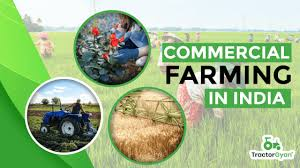

CHALLENGES
Farmers in India face many challenges, including inefficiencies and corruption in the procurement system, and short-term loan waivers that don't address underlying issues.
BENEFITS
Subsistence farming has many benefits, including food security, health security, and soil erosion prevention.
COMMERCIAL FARMING
In this farming method, the Indian farmer uses a high amount of fertilizers, pesticides, and insecticides to enhance and maintain the growth of the crops. Depending on the crop best suited to the respective weather and soil, commercial farming in India varies across different regions.

TRANSFER FARMING
This type of farming is called jhumming in India. Fallow fields are not unproductive. During the fallow period, shifting cultivators use the successive vegetation species widely for timber for fencing and construction, firewood, thatching, ropes, clothing, tools, carrying devices and medicines.
INTENSIVE FARMING
India has several states where intensive farming is practised, including Tamil Nadu, West Bengal, coastal Andhra Pradesh, and Kerala. These states are home to farmers that specialise in wet paddy farming. High yield per acre is a hallmark of intensive agriculture.24 Sept 2024
EXTENSIVE FARMING
Extensive farming refers to a type of agriculture where a large area of land is used to produce relatively low yields of crops or livestock. Extensive farming methods typically involve minimal use of inputs, such as fertilizers or pesticides, and rely on natural rainfall for irrigation.30 Sept 2024
PLANTATION
Plantation agriculture is a crop-growing enterprise in which profit is the primary goal. Plantation farming is predicted to be profitable because of how crops are produced for profit. This type of cultivation is common in hot and humid climates. Many people are unaware of the differences between plantation farming and various types of agriculture. And the vast majority of people believe they are extremely similar.
Commercial plantation is a type of commercial agriculture done in subtropical or tropical areas. It was presented in India by the British. It is capital that has been increased and completed through traveler labor. Every industry used tea espresso, elastic sugarcane banana, and other unprocessed materials. Plantations serve as a link between agriculture and industry.

MIXED FARMING
Mixed farming is a type of farming which involves both the growing of crops and the raising of livestock. Such agriculture occurs across Asia and in countries such as India, Malaysia, Indonesia, Afghanistan, South Africa, China, Central Europe, Nordic countries, Canada, and Russia.
Mixed farming involves growing several species of plants on a farm along with one or more livestock units. The aim is to cultivate the fields so that the animals can benefit from them, while at the same time fertilising the soil naturally. Mixed farming is definitely an agricultural production system for the future.